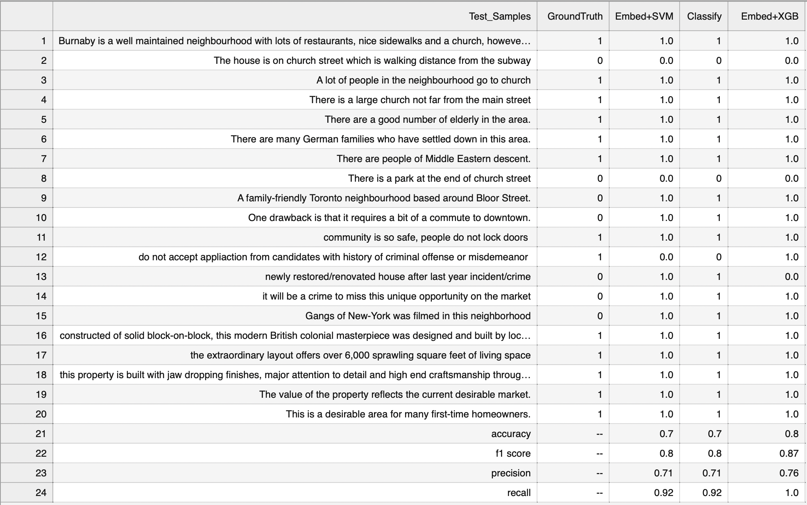
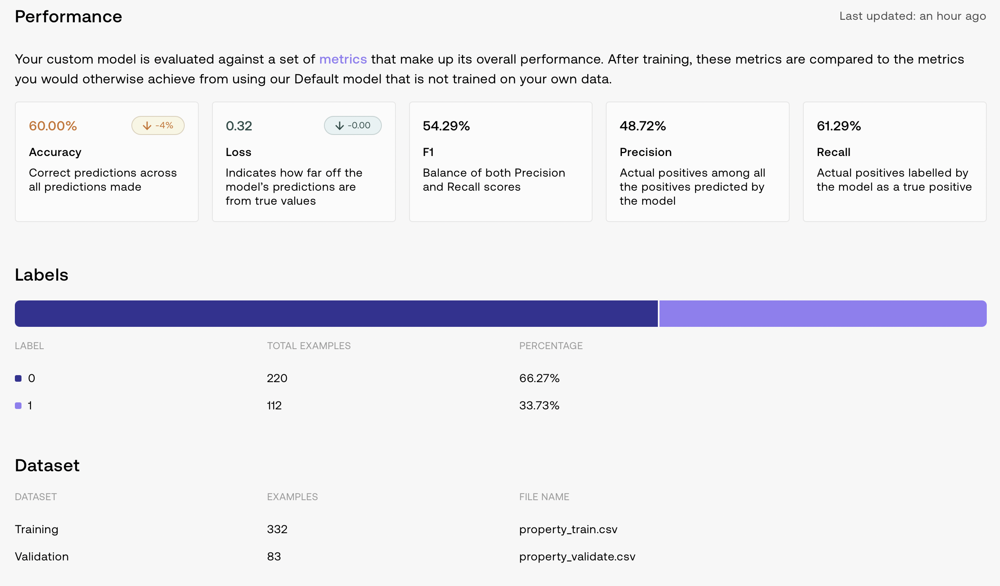

ML Project Overview
In this project, I developed a custom text classification pipeline leveraging advanced language models and traditional machine learning techniques. The primary goal was to classify text data into predefined categories using minimal labeled examples, demonstrating the ability to build a robust classifier with limited data.
Data Gathering and Pre-processing
- Data Source: The dataset comprised text samples that were manually labeled into binary classes. The training data was sourced from CSV files, and Pandas was utilized for efficient data manipulation and preprocessing.
- Pre-processing: Text data was preprocessed, ensuring it was appropriately structured for model input. This included handling missing values, encoding labels, and preparing the text data for embedding generation.
Model Training and Testing
- Cohere Classifier: Initially, the project utilized Cohere's pre-trained language models for text classification. The model was fine-tuned with example-based few-shot learning to predict the class labels for unseen text.
- Text Embeddings: Cohere's embedding endpoint was used to transform text data into dense vector representations, capturing semantic information from the text.
- SVM Classifier: These embeddings were then fed into a Support Vector Machine (SVM) classifier from Scikit-learn. The model was trained with balanced class weights to handle any class imbalances in the dataset.
- XGBoost Classifier: Additionally, XGBoost, a powerful gradient boosting classifier, was trained on the embeddings to compare its performance with the SVM model.
- Evaluation Metrics: The models were evaluated based on accuracy, F1-score, precision, and recall, providing a comprehensive view of their performance. The predictions and metrics were then logged and exported for further analysis.
Technologies and Tools
- Programming Language: Python
- Libraries/Tools: Pandas for data manipulation, Scikit-learn for machine learning, XGBoost for gradient boosting, and Cohere for text embeddings and classification.
- Deployment: The entire pipeline was built and tested within Google Colab, utilizing its environment for seamless development and model training.
This project showcases my ability to integrate state-of-the-art language models with traditional machine learning techniques to build efficient and scalable text classification solutions. The use of multiple models and detailed evaluation highlights my proficiency in model comparison and selection, key skills in any data science project.
Datasets
Code
Results

